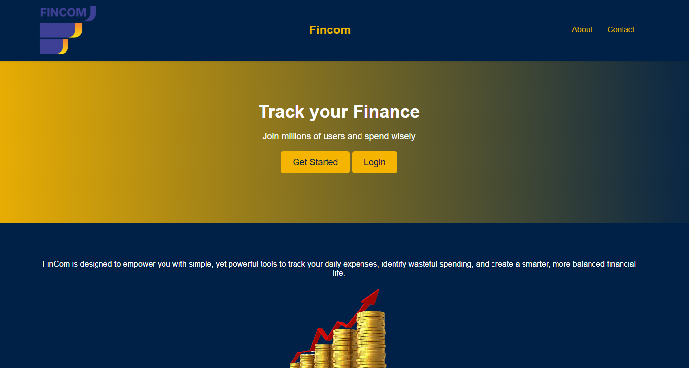
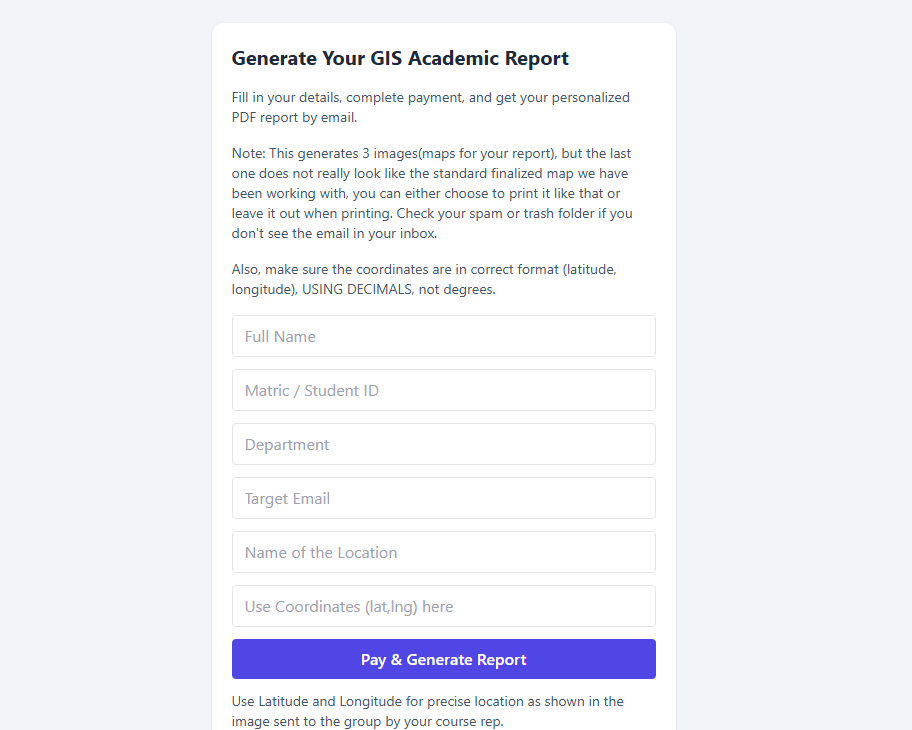
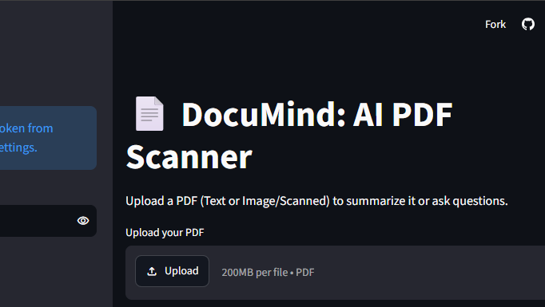
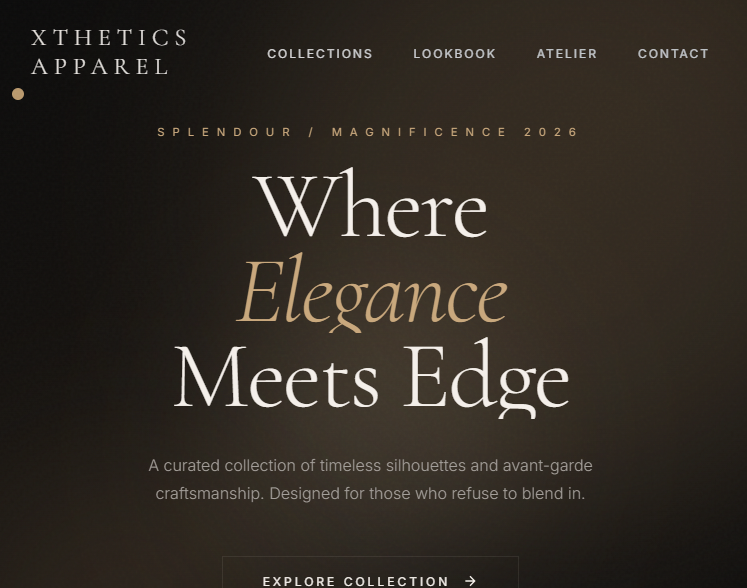

Backend Software Engineer | AI & Data Systems
I architect scalable server-side systems and integrate AI workflows that deliver production-ready results faster. Specializing in Python, Django, FastAPI and data infrastructure.
I specialize in building robust backend systems, data pipelines, and AI-driven platforms. Using Python, Django, FastAPI, and data tools like Pandas, I transform complex business problems into scalable, highly-available infrastructure.
I don't just write code; I build solutions, lead engineering teams, and leverage Agentic AI as a multiplier to deliver 10x results. From deploying revenue-generating web apps to orchestrating databases and local AI models, I thrive at the intersection of backend logic and machine learning.
Driven by curiosity and a relentless pursuit of knowledge, my mission is to build impactful tools that inspire and empower people everywhere.




I'm always open to connecting with creative minds and tech enthusiasts. Whether you have a bold new project or just want to share some tech inspiration, I'd love to hear from you. Let's collaborate and make something inspiring!
Want a deeper look at my experience and skills?
Download Resume